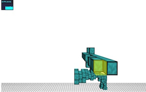
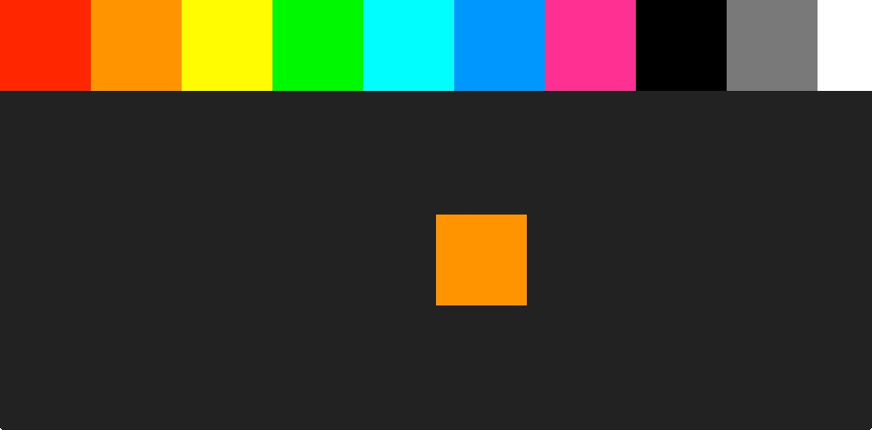
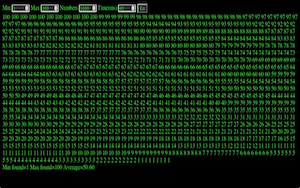
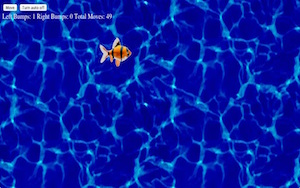
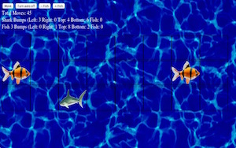
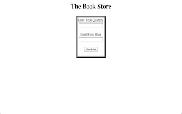
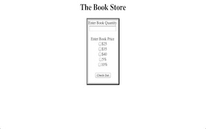

Ring PatternAnimated pattern using the canvas element. Double click for full screen, and scroll for more colors.April 03, 2012Canvas GraphParametric graph using the canvas tag. Draws a parametrit function (in this case the butterfly curve) in real time so that you can see it coming together.December 08, 2011Canvas PaintSimple paint tool using canvas. Has eight different colors and four sizes. Records while you are drawing so that you can play it back later.December 08, 2011Asteroids GameQuick game I made to help a friend out. Click to shoot and don't let the zombies / asteroids touch you.December 08, 2011Color WheelCircle that rotates around the center of the screen to make a color wheel. Nothing terribly hard, but it looks interesting.December 08, 2011Physics and CollisionI am practicing realistic collision with objects, and this is the canvas I am testing in.December 08, 2011Ball BounceIn this homework assignment we were told to create circles that moved and bounced off of the walls.December 08, 2011Physics Ball BounceIn this homework assignment we were told to create circles that bounced off of each other and walls.December 08, 2011THREE.js PlaygroundThis is where I have been testing new methods using THREE.jsDecember 08, 2011